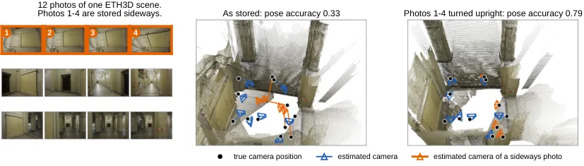
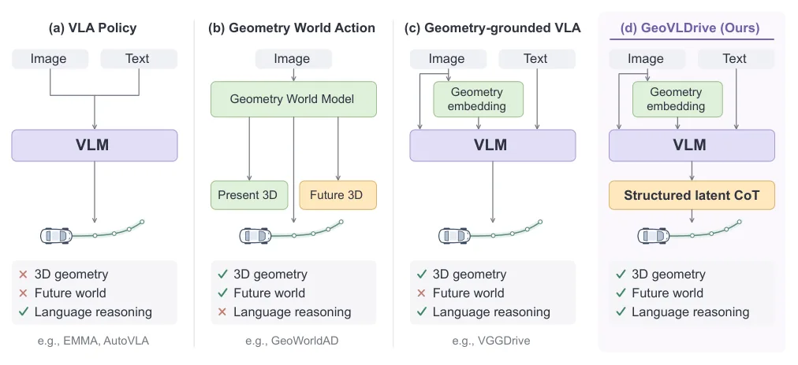

新论文 · 日期 2026-11-24 · score 16 · S层 · Geometry Foundation Models / 3D Foundation Models · cs.CV
内容级别：完整单篇海报
作者：Ernesto Lozano, Alberto Jaenal, Javier Civera
评分 8.7/10
3D 基础模型流式重建因子图米制尺度尺度漂移视觉-惯性回环
一句话工作总结：一句话：把「每个窗口差一个尺度」这件事从隐式记忆挪到因子图上当变量解，再用米制深度模型或 IMU 给每个尺度一个绝对观测，长序列的尺度漂移就被钉住了。
3D 基础模型（3DFM）能在一次前向里出稠密几何，但跨视图注意力的跨度有限。现有做法要么把视频切块做几何对齐、用隐式记忆递归更新，要么在块之间架位姿图；两类都容易漂移，主要原因是单目几何看不到米制尺度。Xtream 是一个混合流式管线：前端用 3DFM（DA3-Giant）在 64 帧窗口上给相对位姿与深度，后端维护一个以关键帧为节点的因子图，并把「每个窗口的对数尺度比 ℓk」当作待估变量显式建进图里。米制信息有…
3D foundation models (3DFMs) enable dense reconstruction in a feed-forward pass, yet their effective span is limited by cross-view attention. Local consistency has been expanded through geometric alignment of…

新论文 · 日期 2026-11-24 · score 15 · S层 · Geometry Foundation Models / 3D Foundation Models · cs.CV
内容级别：完整单篇海报
作者：Ruicheng Wang, Linlin Xin, Sicheng Xu, Jianfeng Xiang
评分 8.5/10
4D 重建稠密点跟踪点图查询双编码器仿射体压缩相机位姿闭式解动态场景
一句话工作总结：一句话：把「某像素在另一时刻、另一相机里在哪」变成唯一的查询接口，再用一个重 context 编码器 + 一个轻 query 解码器把稠密时空查询摊薄，几何、运动、位姿三件事就都从同一次前向里出来了。
从 RGB 视频重建动态场景，既要几何也要运动；已有方法要么把重建与跟踪拆成两条管线，要么把稠密时空解码做得极其昂贵。MoGe-4D 用「有序 query」统一二者：每个 query (i,j) 同时预测一对点图——源帧像素在目标时刻、分别表达在源相机系（allocentric）与目标相机系（egocentric）中的三维位置。两张图共享同一物理表面，因此相对相机位姿可以用置信度加权、遮掉动态/天空后的刚体对齐闭式…
Reconstructing dynamic scenes from RGB video requires reasoning about both 3D geometry and motion across viewpoints, yet existing methods either split reconstruction and tracking into fragmented pipelines or f…

新论文 · 日期 2026-11-24 · score 11 · S层 · Geometry Foundation Models / 3D Foundation Models · cs.CV
内容级别：完整单篇海报
作者：Qiaoqiao Jia, Guile Wu, Dongfeng Bai
评分 7.3/10
4D 生成多视图一致性点图视频LoRA 模态适配跨视图监督机械臂操作VGGT-Ω 特征对齐
一句话工作总结：一句话：把「RGB 潜变量」和「点图潜变量」并排塞进同一条 Wan2.1 骨干，用模态特定 LoRA 分开适应、用零初始化残差互相看一眼，再用「真值投影得到的跨视角对应」同时约束 3D 坐标与 VGGT-Ω 特征。
机器人操作需要预测「机器人-物体」交互如何随时间演化，这既包含视觉外观，也包含场景几何。多相机设置下，预测还要在视角之间保持一致，并能在不同动作与相机配置下可控生成。现有视频生成模型对外观与运动有很强先验，但缺少显式几何建模；几何感知与多视图生成虽然探索了外观-几何联合建模与跨视图一致，但要同时在机械臂操作条件下生成时间连贯的外观与几何仍然困难。GeoMVGen 提出一个联合生成多视图 RGB 与点图视频的框架：以…
Robotic manipulation requires predicting how robot-object interactions evolve over time, encompassing both visual appearance and scene geometry. In multi-camera settings, such predictions need to capture the e…

新论文 · 日期 2026-11-24 · score 11 · S层 · Geometry Foundation Models / 3D Foundation Models · cs.CV
内容级别：完整单篇海报
作者：Yukun Shi, Minglun Gong
评分 7.6/10
3D 基础模型鲁棒性评测EXIF 方向相机位姿数据契约基准污染
一句话工作总结：一句话：这不是新方法，而是一份把「方向标签在数据链路里被吃掉」这件事钉死的测量报告——几个侧放照片就足以让最强的 3D 基础模型位姿变差，而流水线里没有任何环节会告诉你。
多视图 3D 基础模型能在一次前向里从一组照片估计相机位姿与三维点。很多相机把竖拍照片存成横向像素，并在 EXIF 里写一个方向标签告诉查看器怎么转；这个标签可能被忽略、丢失或写错。作者在三个数据集上测量了旋转照片对五个此类模型（VGGT、π³、Depth Anything 3、MapAnything、VGGT-Ω）的影响：少量旋转照片会降低所有模型的位姿精度，ETH3D 这个标准基准里本来就存在的侧放照片也同样如…
Multi-view 3D foundation models estimate camera poses and 3D points from a set of photos in one forward pass. Many cameras store a portrait shot sideways, with an orientation tag telling viewers how to turn it…

新论文 · 日期 2026-11-24 · score 10 · S层 · Geometry Foundation Models / 3D Foundation Models · cs.CV
内容级别：完整单篇海报
作者：JiaHui Huang, Songyan Zhang, Hanbing Li, Hanchao Leng
评分 7.8/10
VLA 规划几何锚定潜空间思维链StreamVGGT 注入轨迹评分NAVSIM3D 空间问答
一句话工作总结：一句话：把「未来几何 → 关键目标运动 → 元动作」做成三条有向依赖的潜变量链，再把冻结 StreamVGGT 的多层几何特征按层注入 Qwen3-VL，最后让动作专家一边出轨迹一边让候选互相「打分」。
视觉-语言-动作（VLA）规划器继承了预训练视觉语言模型的语义知识，但它们的推理很少真正落在三维场景结构及其时间演化上。GeoVLDrive 用一个几何锚定的 VLA 框架做 3D 时空推理与规划：三维基础模型的多层特征通过带门控的交叉注意力注入视觉语言骨干；一个结构化的潜空间思维链（CoT）把「未来场景几何、关键目标运动、元动作」组织成有序且分别监督的潜状态；动作专家从这些状态与多深度场景特征生成轨迹候选，并用「…
Vision-language-action (VLA) planners inherit semantic knowledge from pretrained vision-language models, but their reasoning is rarely grounded in 3D scene structure and its evolution over time. We introduce G…